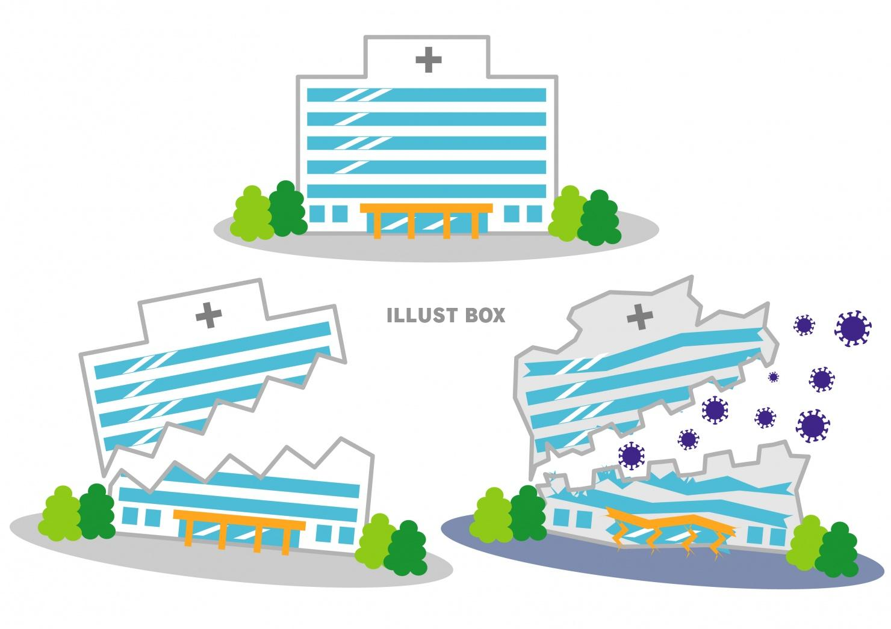

<!DOCTYPE html>
<html lang="ja">
<head>
  <meta charset="UTF-8">
  <title>新型コロナウイルスについて</title>
  <link rel="stylesheet" href="https://maxcdn.bootstrapcdn.com/bootstrap/4.0.0/css/bootstrap.min.css">
  <link rel="stylesheet" href="destyle.css">
  <!-- <link href="https://fonts.googleapis.com/css?family=Lato&display=swap" rel="stylesheet"> -->
  <link href="https://fonts.googleapis.com/css2?family=Montez&display=swap" rel="stylesheet">
  <link href="https://use.fontawesome.com/releases/v5.6.1/css/all.css" rel="stylesheet">
  <!-- <link href="https://fonts.googleapis.com/css?family=Montserrat&display=swap" rel="stylesheet"> -->
  <link rel="stylesheet" href="style.css">
  <!-- <script src="https://ajax.googleapis.com/ajax/libs/jquery/3.3.1/jquery.min.js"></script>
	<script src="https://cdnjs.cloudflare.com/ajax/libs/popper.js/1.12.9/umd/popper.min.js"></script>
	<script src="https://maxcdn.bootstrapcdn.com/bootstrap/4.0.0/js/bootstrap.min.js"></script>
	<script src="https://use.fontawesome.com/releases/v5.0.8/js/all.js"></script> -->
</head>
<body>
  <!-- ヘッダー -->
  <header id="header">
    <div class="header-container">
      <h1 class="header_title">
        <a href='index.html'>COVID-19</a>
      </h1>
      <div id="js-nav-toggle">
        <div>
          <span></span>
          <span></span>
          <span></span>
        </div>
      </div>
      <nav class='header_nav'>
        <ul id="nav-toggle-2">
          <li>
            <a href="#overview"><i class="fas fa-mountain"></i>新型コロナウイルスとは</a>
          </li>
          <li>
            <a href="#symptom"><i class="fas fa-procedures"></i>各種症状</a>
          </li>
          <li>
            <a href="#"><i class="fas fa-images"></i>写真</a>
          </li>
          <li>
            <a href="#"><i class="fas fa-male"></i>感染者数</a>
          </li>
          <li>
            <a href="#"><i class="fas fa-bookmark"></i>今後の対策</a>
          </li>
        </ul>
      </nav>
    </div>
  </header>
  <!-- メインコンテンツ -->
  <div class="container-fluid bg-primary text-white">
  <div class="row" id="top_image">
    <div class="col-6 image-text">
      <h1 class="catch_copy">忘れないで！<br>
        コロナウイルス<br>
        の危険性‼︎
      </h1>
      <p>緊急事態宣言が解除されましたが<br>
        ウイルスの危険性が脆弱化したわけではありません。
      </p>
      <p>国民全員の協力あって安全な国が成り立っています。</p>
      <p class="primary-underline">「国民全員が協力し、安全な世の中を」</p>
      <a href="#"><button class="btn btn-light btn-lg image-btn">今後の対策</button></a>
    </div>
    <div class="col-6 picture-container">
      
      
      
      
      
    </div>
  </div>
  </div>
  <!-- 新型コロナウイルスとは -->
  <div class="container-fluid bg-light">
    <section class="row" id="overview">
      <div class="col-12 overview-title">
        <h4 class="subtitle">overview</h4>
        <h1 class="title"><i class="fas fa-mountain"></i>新型コロナウイルスとは</h1>
        <p class="title-text">実際、コロナウイルスとは何が危険なのでしょうか？<br>
          それを一緒に確認していきましょう。</p>
      </div>
      <section class="col-4 overview-container">
        <h1 class="elem-title">①２つの顔を持つ<br>ウイルス</h1>
        <p>感染しても、多くは症状が出ません。一方で、高齢者や持病をお持ちの方には、牙をむいて襲い掛かります。<span>その場合、肺炎が急速に悪化し、人工呼吸器が必要となります。</span></p>
        
      </section>
      <section class="col-4 overview-container">
        <h1 class="elem-title">②インフルエンザとは<br>違う恐ろしさ</h1>
        <p>元気な方でも急激に悪化し、亡くなることがあります。有効な薬はないため、患者さんは耐えるしかありません。<span>人工呼吸器が雄一の治療法であり、不足すると助かる命が助かりません。</span></p>
        
      </section>
      <section class="col-4 overview-container">
        <h1 class="elem-title">③異例の医療崩壊</h1>
        <p>イタリヤ、スペイン、アメリカでは、実際に人工呼吸器の不足、医療崩壊が起こっています。<span>日本はまだそこまでは至っていませんが、現場からは医療崩壊しそうだという悲鳴があがっています。</span></p>
        
      </section>
    </section>
  </div>
  <!-- 各種症状 -->
  <div class="container-fluid bg-success text-white">
  <section class="row" id="symptom">
    <div class="col-12 symptom-title text-center">
      <h4 class="subtitle">symptom</h4>
      <h1 class="title"><i class="fas fa-procedures"></i>各種症状</h1>
    </div>
    <div class="col-6">
      
    </div>
    <div class="col-6 symptom_text">
      <h2 class="symptom_title">味覚・嗅覚異常</h2>
      <p>物を食べているのに味が感じない、食べ物の臭いが分かりにくいというもの。<span class="text-bold">これは、鼻の奥の方にあり嗅覚を司る嗅細胞にコロナウイルスが感染することによって嗅細胞が障害を受けて、出てくる症状となります。</span></p>
    </div>
    <div class="col-6 symptom_text">
      <h2 class="symptom_title">味覚・嗅覚異常</h2>
      <p>物を食べているのに味が感じない、食べ物の臭いが分かりにくいというもの。<span class="text-bold">これは、鼻の奥の方にあり嗅覚を司る嗅細胞にコロナウイルスが感染することによって嗅細胞が障害を受けて、出てくる症状となります。</span></p>
    </div>
    <div class="col-6">
      
    </div>
    <div class="col-6">
      
    </div>
    <div class="col-6 symptom_text">
      <h2 class="symptom_title">味覚・嗅覚異常</h2>
      <p>物を食べているのに味が感じない、食べ物の臭いが分かりにくいというもの。<span class="text-bold">これは、鼻の奥の方にあり嗅覚を司る嗅細胞にコロナウイルスが感染することによって嗅細胞が障害を受けて、出てくる症状となります。</span></p>
    </div>
    <div class="col-6 symptom_text">
      <h2 class="symptom_title">味覚・嗅覚異常</h2>
      <p>物を食べているのに味が感じない、食べ物の臭いが分かりにくいというもの。<span class="text-bold">これは、鼻の奥の方にあり嗅覚を司る嗅細胞にコロナウイルスが感染することによって嗅細胞が障害を受けて、出てくる症状となります。</span></p>
    </div>
    <div class="col-6">
      
    </div>
    <div class="col-6">
      
    </div>
    <div class="col-6 symptom_text">
      <h2 class="symptom_title">味覚・嗅覚異常</h2>
      <p>物を食べているのに味が感じない、食べ物の臭いが分かりにくいというもの。<span class="text-bold">これは、鼻の奥の方にあり嗅覚を司る嗅細胞にコロナウイルスが感染することによって嗅細胞が障害を受けて、出てくる症状となります。</span></p>
    </div>
    


    
    
    
    
    
  </section>
  </div>


</body>
</html>